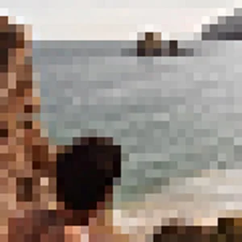

Welcome to my personal website! Here, you'll find my personal journey through the tech world, projects, and resources that I find useful. Feel free to explore. This site gets updated as often as I have free time.
vll4di.github.io/ ├── index ├── about ├── setup ├── links └── projects